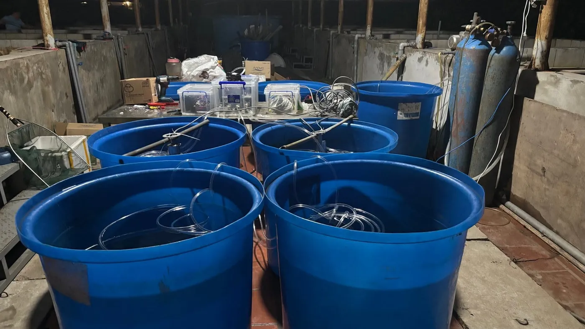
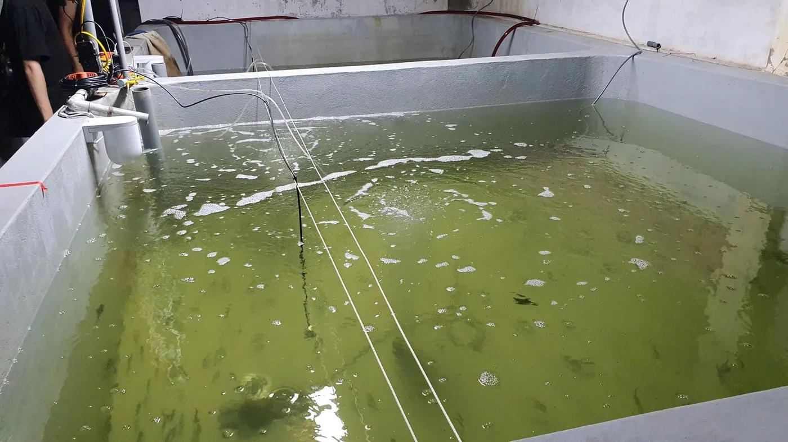
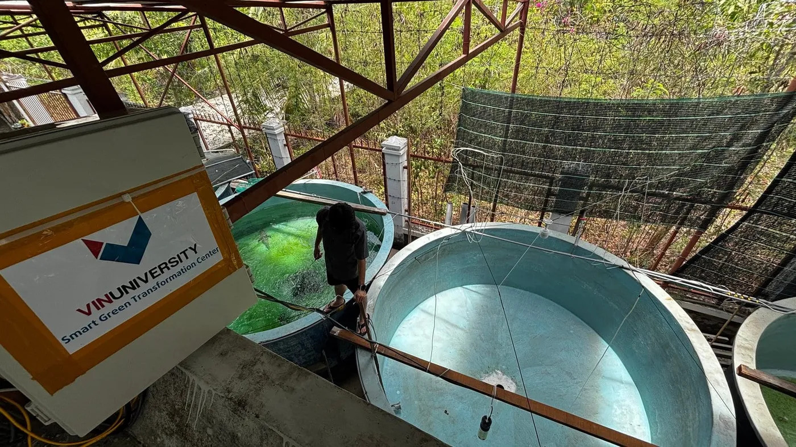
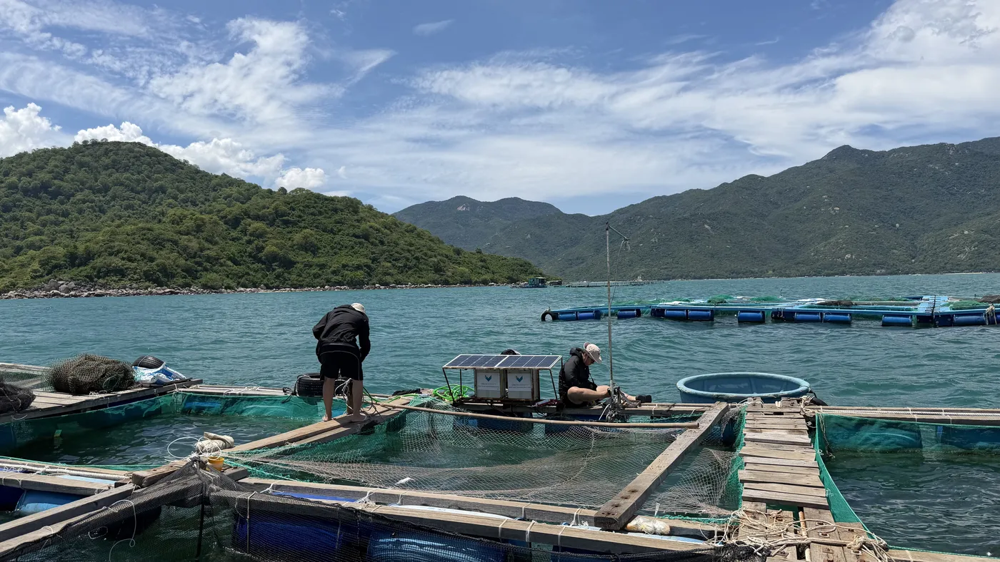
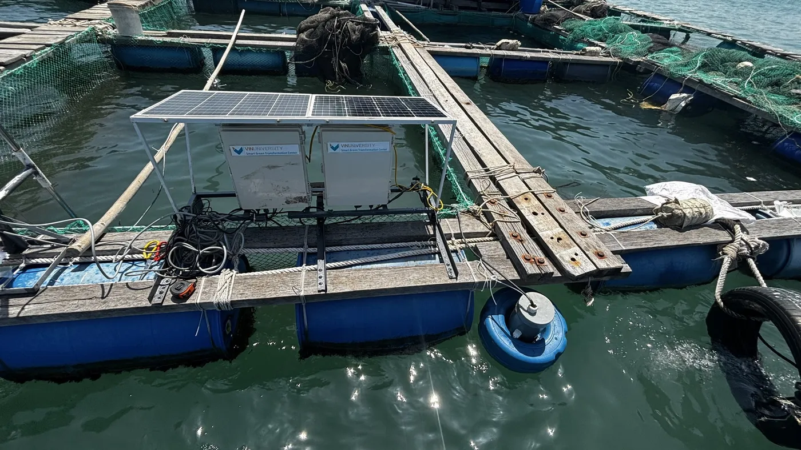

Aaron
AaronNuôi biển thông minh
Trạm quan trắc tự động cho nuôi cá lồng, từ bể thí nghiệm đến vịnh Nha Phu
GREEN-X, VinUniversity · Học viện Nông nghiệp Việt Nam · Viện Nghiên cứu Nuôi trồng Thuỷ sản I và III · Trường Đại học Nha Trang

Dự án của GREEN-X, VinUniversity cùng Học viện Nông nghiệp Việt Nam, các Viện Nghiên cứu Nuôi trồng Thuỷ sản I và III và Trường Đại học Nha Trang. Nhóm xây dựng trạm quan trắc tự động cho nuôi cá, kết hợp camera dưới nước, thuỷ âm và cảm biến chất lượng nước, rồi đưa trạm từ bể thí nghiệm ra lồng bè ngoài vịnh Nha Phu. Tôi phụ trách mạng kết nối và ứng dụng giám sát của các trạm.
01Bối cảnh và mục tiêu
Nuôi cá lồng ngoài biển cần theo dõi liên tục chất lượng nước và tình trạng đàn cá, nhưng người nuôi không thể lặn kiểm tra từng giờ. Một đợt oxy hoà tan sụt giảm trong đêm hay một lần nước đục kéo dài có thể gây thiệt hại cho cả lồng trước khi ai kịp nhận ra.
Dự án hướng tới một trạm quan trắc tự động đặt ngay tại nơi nuôi, ghi dữ liệu cả ngày lẫn đêm và đưa thông tin tới người vận hành qua một ứng dụng. Thách thức nằm ở môi trường: nước đục, sinh vật bám làm mờ ống kính, muối ăn mòn, nguồn điện và sóng di động đều hạn chế.
02Người và đơn vị thực hiện
Dự án bắt đầu từ tháng 2.2025, do TS. Nguyễn Văn Định, TS. Đỗ Danh Cường và TS. Đinh Văn Dũng dẫn dắt. Anh Phạm Minh Hoàng phụ trách kỹ thuật, cùng một nhóm trợ lý nghiên cứu lo phần cứng, phần mềm và triển khai thực địa. Các đơn vị cùng thực hiện:
- GREEN-X (Trung tâm Chuyển đổi xanh thông minh), VinUniversity: đơn vị chủ trì, thiết kế và vận hành hệ thống.
- Học viện Nông nghiệp Việt Nam, Hà Nội: nơi thử nghiệm đầu tiên, trên dàn bể trong phòng thí nghiệm.
- Viện Nghiên cứu Nuôi trồng Thuỷ sản I (Hải Phòng) và III (Nha Trang): thử nghiệm trên bể xi măng trong nhà và bể tròn ngoài trời.
- Trường Đại học Nha Trang: tư vấn về sinh học cá biển và thuỷ âm; trạm ngoài khơi đặt trên hệ thống lồng bè khảo nghiệm của PGS.TS. Ngô Văn Mạnh.
- Sở Tài chính tỉnh Khánh Hoà: làm việc về phương án triển khai trên địa bàn tỉnh.
03Trạm quan trắc làm gì
Mỗi trạm kết hợp ba nguồn dữ liệu, mỗi nguồn trả lời một câu hỏi của người nuôi:
- Nước có an toàn không: cụm cảm biến đo liên tục năm thông số là oxy hoà tan, pH, nhiệt độ, độ mặn và độ đục.
- Đàn cá đang thế nào: camera trên và dưới mặt nước quan sát đàn cá, đồng thời cho biết ống kính đã bám bẩn đến mức nào.
- Cá có đang ăn không: thuỷ âm ghi âm thanh dưới nước, như tiếng cá đớp mồi, để ước lượng mức độ ăn của đàn cá.
- Trạm ngoài khơi chạy bằng điện mặt trời với pin lưu trữ, gửi dữ liệu qua mạng di động về máy chủ; người vận hành theo dõi tất cả trên một ứng dụng giám sát (mục 05).
04Từ phòng thí nghiệm ra biển
Hệ thống được thử qua bốn môi trường, mỗi bước khắc nghiệt hơn bước trước (Hình 1, Hình 2):
- 05.2025: thử trên dàn bể tại Học viện Nông nghiệp Việt Nam, để hiệu chuẩn cảm biến trong điều kiện kiểm soát.
- 08.2025: bể xi măng nuôi cá trong nhà tại Viện Nghiên cứu Nuôi trồng Thuỷ sản I, nơi độ ẩm và hơi muối bắt đầu thử độ bền thiết bị.
- 03.2026: trạm Nuôi biển 1 trên lồng bè ngoài vịnh Nha Phu, tự cấp điện bằng pin mặt trời.
- 04–05.2026: trạm Nuôi biển 2 trên bể tròn ngoài trời tại Viện Nghiên cứu Nuôi trồng Thuỷ sản III, có thêm thuỷ âm.
- Từ đó đến nay: các chuyến bảo trì vào tháng 6, 8 và 10.2026 (mục 06).




05Phần tôi làm: kết nối và ứng dụng
Dữ liệu chỉ có ích khi về được tới người cần dùng, và đó là phần tôi đảm nhận. Tôi dựng mạng riêng ảo (VPN) cho trạm Nuôi biển 2, duy trì các đường VPN để máy của nhóm truy cập được cả ba trạm (hai trạm nuôi biển và trạm bảo tồn), và cùng anh Hoàng xử lý các lần mất kết nối ngoài hiện trường.
Tôi thiết kế ứng dụng giám sát trên ThingsBoard. Màn tổng quan đặt các trạm trên cùng một bản đồ, kèm số đo mới nhất, chỉ số an toàn nước và lịch sử cảnh báo (Hình 3, trái). Mở một trạm, người dùng xem diễn biến từng thông số theo 24 giờ, 7 ngày, 30 ngày hay 12 tháng, xem trực tiếp hai camera và phổ âm thanh thuỷ âm (Hình 3, phải). Người vận hành tự đặt ngưỡng cho từng thông số và so sánh dữ liệu giữa các trạm (Hình 4); cảnh báo được gửi qua Telegram, và mỗi tài khoản chỉ thấy những trạm được giao.


06Những chuyến bảo trì
Trong các chuyến công tác tháng 4, 6, 8 và 10.2026, gần như lần nào nhóm cũng phải sửa trạm vịnh Nha Phu. Khu lồng bè gần như không có sóng di động nên đường truyền phải chuyển sang SIM 5G, rồi đến bộ định tuyến gặp sự cố. Có lúc cảm biến trôi số, có lúc dây cảm biến bị đứt, có lần camera dưới nước rơi ốc giữ. Ở những chuyến đó, tôi lo hậu cần, ghi hình hiện trường và hỗ trợ đội kỹ thuật (Hình 5).


07Kết quả đến nay
- Hai trạm đang hoạt động: Nuôi biển 1 trên lồng bè vịnh Nha Phu từ 03.2026, Nuôi biển 2 tại Viện Nghiên cứu Nuôi trồng Thuỷ sản III từ 04–05.2026.
- Một ứng dụng giám sát chung cho các trạm, với cảnh báo theo ngưỡng, so sánh và xuất dữ liệu, cùng camera và thuỷ âm trực tiếp.
- Kinh nghiệm vận hành thiết bị ngoài biển qua nhiều đợt sửa chữa, từ đường truyền đến cảm biến và camera.
08Truyền thông
GREEN-X đã đưa tin về các phiên làm việc của dự án: với Ban Quản lý Vịnh Nha Trang, 22.08.2025 và với các sở, ngành tỉnh Khánh Hoà, 16.03.2026. Trang dự án do anh Phạm Minh Hoàng viết có thêm ảnh và video triển khai: xem tại đây.
Công bố
- 2026From Monitoring to Action: A Comprehensive Survey of Autonomous Decision-Making in Smart Aquaculture SystemsTiền ấn phẩm · Đang bình duyệt